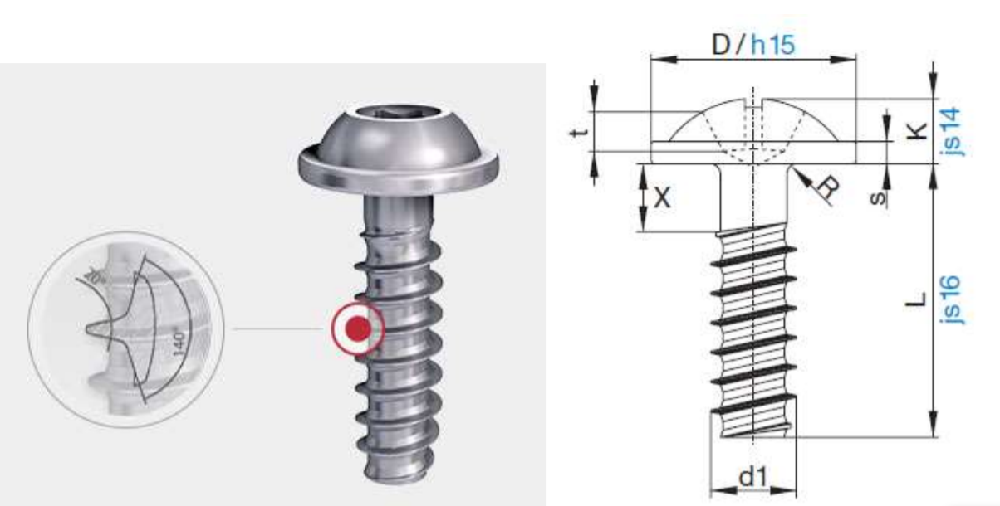
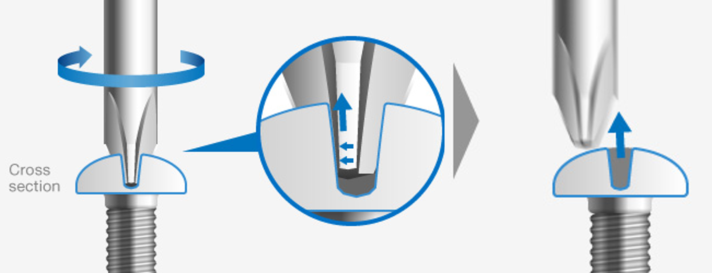
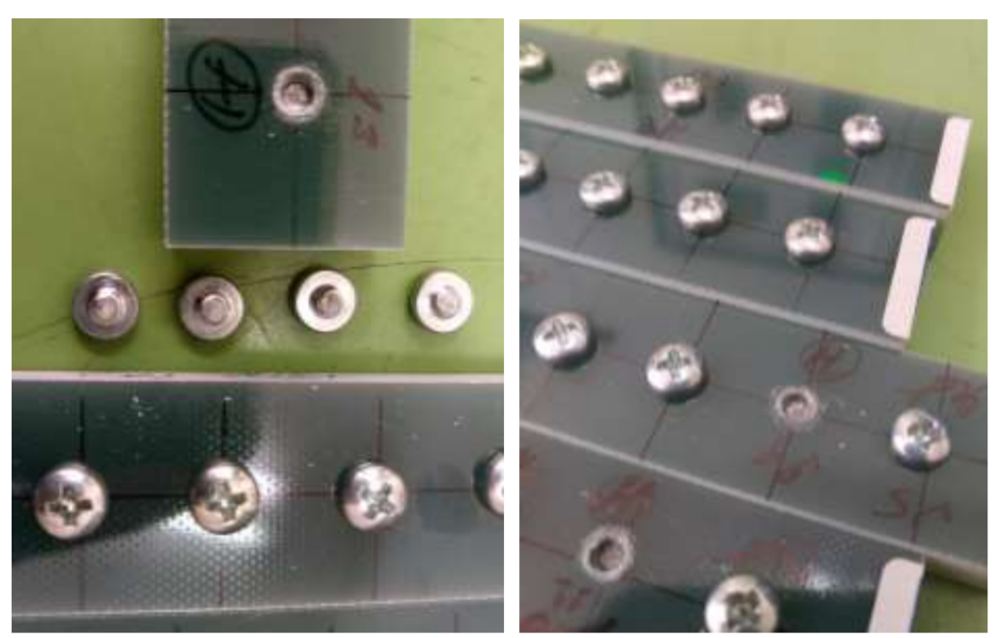
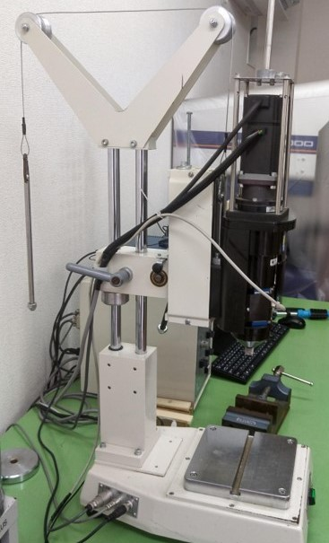
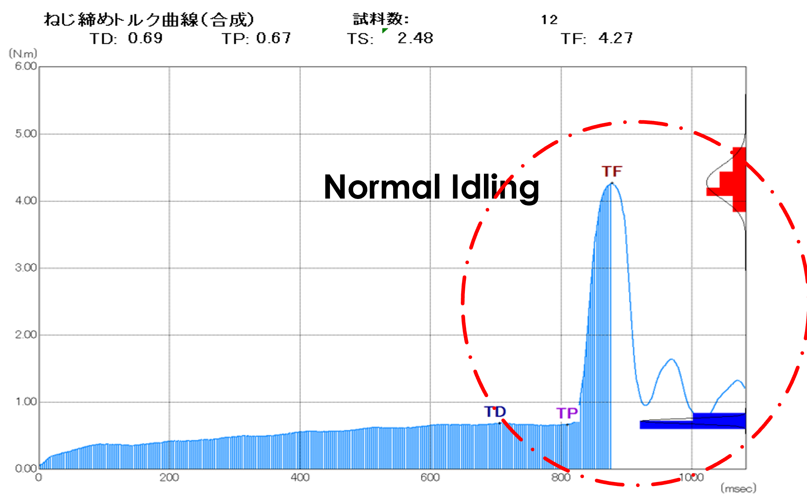
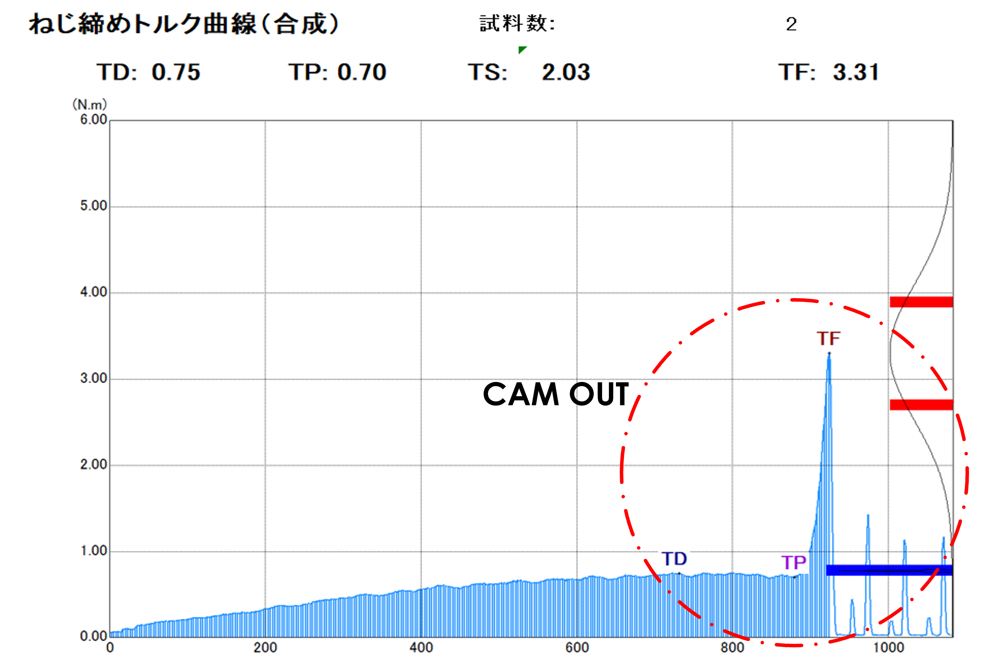
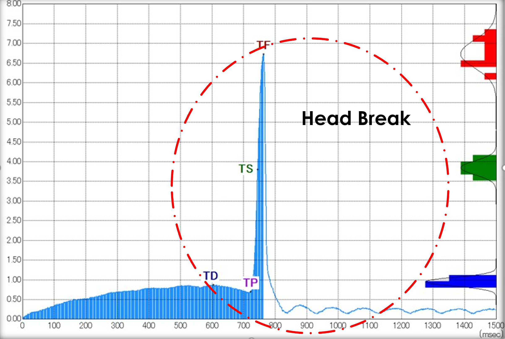

Fastening solution for themoset plastics durable to repetitive usage
Under Prof. Masakazu OKAZAKI
📍 Nagaoka Universty of Tech, Japan

fig 1. Screw parameters
fig 1. Screw parameters
Summary
Conventionally, fastening in Thermoset plastics is done in three steps. First a drill-hole is made on the target material surface, then a hollow plastic insert added in the hole and finally the screw is fastened in high speed producing enough heat for the insert to melt, block and lock the screw in the surface or wall. This is also a irrevesible process.With our approach, we can reccursicvely fasten the screw in just two steps. Drill hole and then fasten without an insert material. Our screw can also be unscrewed and screwed back in the same hole 2-3 times. This project had the following objectives:
- Re-Paramatrize, optimize and test Saima's new Special Non-sert for Bakelite and Epoxy.
- Test Analysis of the screws on Torque Analyzer upon on various loads and the drill hole size.
- Investigate and find suitable conditions(hole size & Load) in the Special Non-sert screw to achieve Repeatability
- Reduces stress due to low flank angle.
- Insert elimination possible.
- Offers Repeatability in thermosets
- The special Triangular thread profile where the material can exert pressure only at three edges.
 fig 2. fastening ways for Themoset plastics
fig 2. fastening ways for Themoset plastics
 fig 3. CAMOUT demonstration
Material and Market Study
Fastening industry is primitive hence developed and saturated but we still dont have easy and robust ways for fastening screws in thermoset plastics which is a highly usage material in construction and household. A Thermosetting plastic is a polymer that irreversibly becomes rigid when heated. Its Brittle nature which makes machining tough on it. Hence,There is great potential for innovation in fastening improvement in thermoset plastics. Among various Thermoset materials, inn this work we have focused into:- Bakelite resin
- Paper based (Cellulose pulp + phenolic resin)
- Fabric based bakelite (Woven Cotton Fabric+phenolic resin)
- Epoxy resin
Recently that Bakelite resin has been replaced by epoxy resin in recent times with more reinforcement features embedded in them. Epoxy rasin offers a higher tensile strength matrices as compared to Bakelite with Low water Absorption, Excels in insulation and heat resistance.
Major companies operating in the global Bakelite and Epoxy market include Sumitomo Bakelite Co. Ltd. and MingQun Optoelectronics Tech. Co. Ltd., Borden Chemical Inc., Romit Resins Pvt. Ltd., Momentive Specialty Chemicals, and Elkor.

fig 4. Epoxy slabs, head break at 131 N Load for Drill Bit of 3.6 mm
Testing and Results
Torque analyzer Plot explanation: Torque analyzer reproduces the entire fastening as a plot between resistive Torque Vs Time for any given Rotational Speed(PRM) arriving at quicker and efficient results. the following torque informations are inferred from a plot:
When a fastening is successful, which means all the parameters compliments well enough for a workable screw tightening, its usually refered as Normal Idling
Test conditions
Results

fig 5. Saima Torque Analyser

fig 6. Plot for a normal Idling

fig 7. Plot for a Camout

fig 8. Plot for a head breaking point